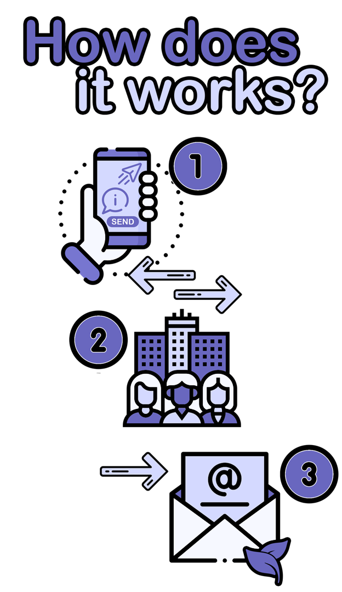

As soon as the employee clicks the "Send" button, all information about the care and activities performed at the client's residence is instantly transmitted to the system. The company securely stores, processes, and organizes this data in real time. After verification, the information is forwarded to designated family members or supervisors, who are immediately notified about the services provided to their loved one.
This digital process improves communication and transparency between caregivers and families, replacing outdated paper reports with a faster, more efficient, and eco-friendly solution. By digitizing the workflow, we ensure a modern, sustainable, and compassionate way to manage health and care information for everyone involved.